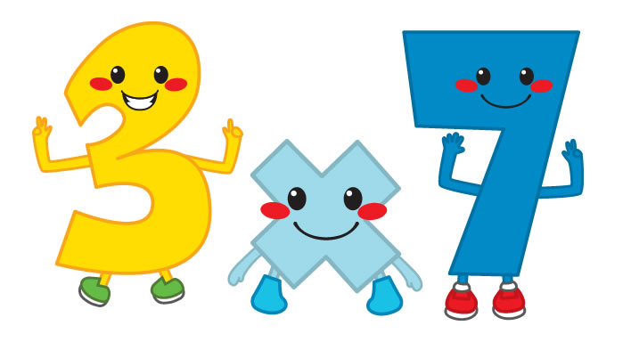

Para poder hacer una multiplicación de más de una cifra es importante tener conocimiento de las tablas de multiplicar o utilizar otro método que nos facilite la determinación de cada multiplicación individual.
Cuando hacemos multiplicaciones de números con más de una cifra, colocamos el multiplicador debajo del multiplicando, trazamos una raya por debajo de ambos y colocamos el signo de multiplicación (x) del lado izquierdo de las cifras.
Comenzamos a multiplicar, de derecha a izquierda, la primera cifra del multiplicador por cada una de las cifras del multiplicando y vamos colocando las unidades de cada producto debajo de la raya, también de derecha a izquierda, y las decenas se las sumamos al siguiente producto. (Como verás en el ejemplo, el primer producto es 6 x 3 = 18, colocamos el 8 y nos llevamos una que se la sumamos al siguiente producto 3 x 5 = 15 + 1 = 16). Después hacemos lo mismo con cada una de las cifras restantes del multiplicador (decenas, centenas), y las vamos colocando debajo de la fila anterior, desplazadas un lugar a la izquierda.
Al terminar de multiplicar la última cifra del multiplicador por todas las del multiplicando, trazamos una raya debajo de la última fila (tendremos tantas filas como cifras tenga el multiplicador) y procederemos a sumar todas las filas de manera ordenada. El resultado obtenido será el producto de la multiplicación.
Una de las características más peculiares asociadas a la multiplicación es la propiedad conmutativa. Esta se refiere a que la alteración en el orden de los factores para llevarla a cabo no alterará el producto o resultado, es decir, 6 x 4 o 4 x 6 tendrán el mismo producto o resultado = 24.